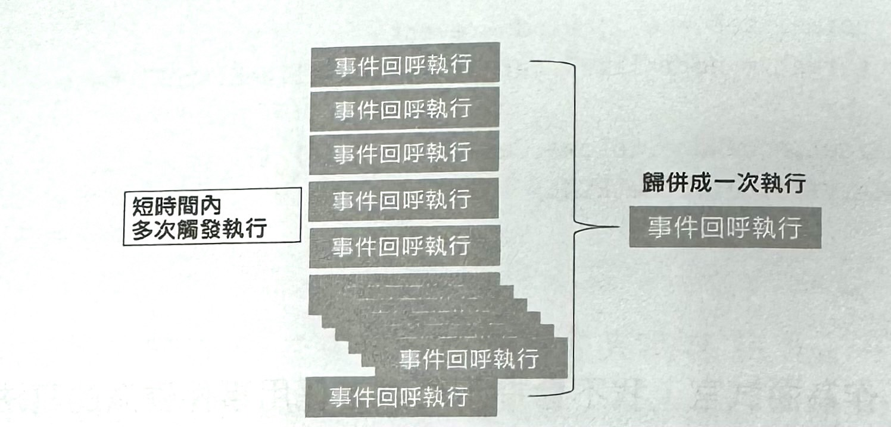
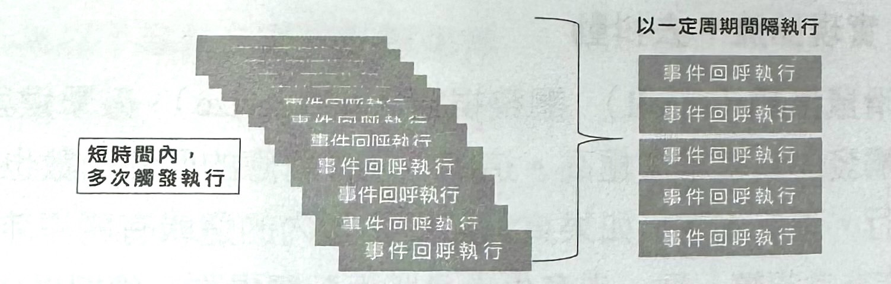

1-4-2 效能最佳化
一直以來,效能最佳化都是前端的重要課題,不僅能實實在在地影響產品效能,也會在面試環節被反覆提及。無論面試者是初入前端的新手,還是經驗豐富的老手,面試官都能在效能方面找到合適的切入點,對面試者進行考驗。
前端效能是一個太過寬泛的話題,脱離場景和需求談效能常毫無意義。很少有面試官會直接拋出「如何最佳化前端效能」這樣一個空架子問題。也不會有技術經理直接丟給你「把產品效能提升一些」這樣的專案。畢竟這樣的問題太大,根本讓人無從下手。需要針對實際場景和瓶頸來分析。
但是,如果面試官真的這麼問了該怎麼辦呢?
也許會這樣回答會比較洽當:前端效能涉及很多方面,最佳化角度和切入點都有所不同;主要可以分為頁面專案最佳化和程式細節最佳化兩大方向。頁面專案最佳化可以從頁面請求開始,涉及網路通訊協定、資源設定、瀏覽器效能、快取等;程式節最佳化方面的工作相對零散,舉例來說，要了解 JavaScript 對 Dom 的操作過程、宿主還境及單執行緒的相關內容等，以寫出效能人性化的程式。
為了更進一步地還原真實場景,下面將配合開放例題和程式例题這兩種面試題目從以上兩方面進行解析。
開放例題
平時做過哪些效能最佳化的案例？
回答思路：
- 1.介紹專案規模:造訪流量、金流量
- 2.介紹用戶面向: To C 指 To Consumer (對消費者)，To B 是To Business (對企業)
- 3.具體優化策略項目名稱，方案可以參考以下案例
特別注意，因為不知道面試官具體會問多細，於是需要避免侃侃而談，點到策略名稱為止即可。主動權交給面試官，一般他們會針對有興趣的點優化策略加深追問。
可以從3個維度分析，從建立專案初期到執行，到最後的轉化等角度分析並提出解決方案，並且提出統計數據作為案例背書。
顯示身為專案負責人對於經手專案最佳化策略的把握。
WebP 圖片最佳化
產品頁面中常常存在大量的圖片內容,因此圖片的效能最佳化是一個瓶頸。 除了使用傳統的圖片懶載入方法,還有 WebP 格式取代方案。於可能存在潛在的相容性問題,所以會在取代圖片 進行 WebP 圖片格式的相性偵測。此操作參考了社群的一貫做法。 利用 img 標籤載入一張 base64 的 WebP 格式圖片,並將結果存入 localStorage 中防止重複判斷。如果該終端支援 WebP 圖片格式,則再對圖片格式進行取代。 這個相容性偵測過程被封裝成 Promise 化的通用介面,相關程式片段如下。
const supportWebp = () => new promise (resolve => {
const image = new Image()
image.onerror =() => resolve(false)
image.onload = () => resolve(image.width ===1)
image.src ='data:image/webp;base64, UklGRi QAAABXRUJOVIA4IBgAAAAWAEAAWAOJAQAA3AA/VUUAAA='
}).catch(()=>false)
這時試官常常會進一步關心專案收益情況。這需要面試者根據實際情況回答,舉例來說,實際上線時,對10%的流量進行了分組切分。5%為對照組,仍然採用傳統格式:另外5%為試驗组,進行 WebP 格式試驗。最後結果顯示收益非常有限。為此,進行了分析:認為出現近似零收益的原因是圖片服務的快取出現問題。由於新轉換的一批 WebP 格式圖片沒有被快取,因而效能出現問題。為了驗證猜想,決定繼續進行擴量試驗並觀察結果。果然,後續排除快取問題後,轉化提升了25%~30% 左右。
透過以上回答,如實說明了出現的非預期案例,並說明遇見問題時如何進行分析進而解決問題的一系列過程。這樣的回答能明確表現出確實做過該專案並進行了思考分析,最後落地。這種想法也更容易被面試官所接受。
由此可以看出,效能最佳化其實並不難做,重要的是解決問題的想法,以及解決問題的過程中對專案的把控。這些內容稱之為「軟素質」。
隨選載入最佳化
如果面試官圍繞著剛才列舉的「資源包裝和向程式拆分(隨選載入)」方向提問,仍然會採用同樣的想法進行回答: 接手專案後,發現歷史原有的資源包裝設定並不合理,嚴重影響了效能表現。因此,借助建置工具對資源進行了合併包裝。但是,需要注意的是,策略並不是大刀闊斧地進行資源合併,因為這様會讓 bundle.js 的體積越來越大,所以需要進行逆向程式拆分。
以實際頁面為例,當點擊播放按鈕後,頁面會出現視訊清 單浮層(點擊視訊前後為同一頁面,類似單頁應用)。視訊列表浮層包含了捲動處理、视訊播放等多項複雜邏輯,因此並沒有對這個浮層的指令稿進行合併包裝,而是進行單獨拆分當使用者點擊浮層觸發按鈕後,再執 行對這一部分指令稿的請求。
對於專案方面涉及的效能最佳化,不僅需要做,還要用資料證明做法的合理性。同時,對使用者點擊觸發按鈕的機率進行了統計,發現進入頁面的使用者只有10%左右會點擊按鈕,進一步觸發視訊清單浮層。也就是說,大部分(90%)使用者並不會看到這一浮層,延遲隨選載入是有統計資料支援的。
透過這個案例,發現效能最佳化其實是一個開放式問題,非常依賴實作。可根據上面的實例,結合自己的專案進行回答。
雖然以上回答沒有涉及程式實現,但是能夠反映出面試者的專案意識,這在專案方面的效能最佳化實作中是非難能可貴的。上面建置工具進行「隨選載入」並不是使用熟的 webpack 工具鏈實現的，而是用公司內部封裝的專案化工具實現的。在幾年前,這樣的方案並不成熟,因此寫了一些隨選載入的外掛程式,配合自己的專案化工具使用。很多面試官都會對這方面的內容很有趣,可以將面試的問題延伸到 FIS 和 webpack 的比較,以及專案化工具的設計等話題。
專案方面有關的效能最佳化還包含圖片懶載入、雪碧圖、合理設定快取政策、使用 prefetch 或 preload 進行預先載入、以 tree shaking 方法為主進行瘦身等內容。
瀏覽器動畫效能最佳化
- 一般來說,CSS3 比 JavaScript 實現為基礎動畫效率更高,因此會優先使用 CSS3 實現動畫(這一點並非絕對)。
- 在使用 CSS3 實現動畫時,要考慮開啟 GPU 加速(這一點也並不總是產生正向效果)。
- 優先使用資源消耗最低的 transform 和 opacity 兩個屬性
- 使用 will-change 屬性。
- 獨立合成層,減少繪製區域。
- 對於只能使用 JavaScript 實現動畫效果的情况,可以考慮使用 requestAnimationFrame 和 requestIdleCallback API。
- 批次進行樣式轉換,減少版面配置抖動。
事實上,上面每個操作的背後都包含著很多基礎知識:
- 如何了解 requestAnimationFrame 和 60fps?
- 如何實現 requestAnimationFrame polyfill
- 哪些操作會觸發瀏覽器 reflow(重排)或repaint(重繪)?
- 對於列出的程式,如何進行最佳化?
- 如何實現捲動時的節流、去抖動函數?
實戰1:初步解決版面配置抖動問題
請對以下程式進行最佳化。
var h1 = element1.clientHeight
element1.style.height = (h1 * 2) + 'px'
var h2 = element2.clientHeight
element2.style.height = (h2 * 2) + 'px'
var h3 = element3.clientHeight
element3.style.height = (h3 * 2) + 'px'
這是一道較為基礎的題目,上面的程式會造成典型的版面配置抖動問題。
版面配置抖動是指 DOM 元素被 JavaScript 多次覆寫,導致文件多次無意義重排。瀏覽器很「懶」,它會合併(batch)目前操作,統一進行重排。可是,如果在目前操作完成前從 DOM 元素中取得值,那麼就會迫使瀏覽器提早執行版面配置操作,這被稱為強制同步版面配置。這樣做對低設定的行動裝置來說,後果是不堪設想的。
對 element1 進行讀寫入操作後,企去取得 element2 值,瀏覽器為了取得正確的值,只能進行重排,因此最佳化想法如下。
//讀
var h1 = element1.clientHeight
var h2 = element2.clientHeight
var h3 = element3.clientHeight
//寫(無效版面配置)
element1.style.height = (h1 * 2) + 'px'
element2.style.height = (h2 * 2) + 'px'
element3.style.height = (h3 * 2) + 'px'
2.使用 window.requestAnimationFrame 對上題程式進行程式最佳化
該方法告訴瀏覽器你希望執行的操作,並請求瀏覽 次重繪之前呼叫指定的函數來更新。 該方法的語法如下。
window.requestAnimationFrame(callback)
就是說,當你需要更新幕畫面時就可以呼叫此方法。瀏覽器在下次重繪前會統一執行回呼函數,最佳化方案如下。
// 讀
var h1 = element1.clientHeight
// 寫
requestAnimationFrame (() => {
element1.style.height = (h1 * 2) + 'px'
})
// 讀
var h2 = element2.clientHeight
// 寫
requestAnimationFrame (() => {
element2.style.height = (h2 * 2) + 'px'
})
// 讀
var h3 = element3.clientHeight
// 寫
requestAnimationFrame (() => {
element3.style.height = (h3 * 2) + 'px'
})
將程式中所有 DOM 的寫入操作放在下一起執行。這樣可以有效減少無意義的重排,顯然效率更高。
3:延伸題目,實現 window.requestAnimationFrame 的 polyfill
polyfill 就是常說的墊片,此處指在瀏覽器相容性不支援的情況下的實現方案。
在一些舊版本瀏覽器中無法相容window.requestAnimationFrame ，為了 讓程式在舊機器中也能執行該邏輯並不顯示出錯,請用程式實現 window.requestAnimationFrame 邏輯,程式如下所示。
if(!window.requestAnimationFrame) window.requestAnimationFrame = (callback,element) => {
const id = window.setTimeout(() => {
callback()
}, 1000 / 60)
return id
}
if(!window.cancelAnimationFrame) window.cancelAnimationFrame = id => {
clearTimeout(id)
}
上面的程式按照每秒鐘60次螢幕更新頻率(大16.7ms一次),並使用 window.setTimeout 來模擬 window.requestAnimation方法。這是一種粗略的實現,並沒有考慮統一瀏覽器字首和 callback 參數等問題。對於一般需求,上面的程式已經能夠滿足要求了。
實戰4:為以下每個 li 增加點擊事件
根據以下 HTML 內容,為每個 li 增加點擊事件。
<div>
<ul>
<li>1</li>
<li>2</li>
<li>3</li>
<li>4</li>
<li>5</li>
<li>6</li>
<li>7</li>
<li>8</li>
<li>9</li>
<li>10</li>
</u1>
</div>
題目非常基礎,但是在實現方式上需要注意是否使用了事件委派。如果面試者直接對 li 進行綁定處理,那麼很容易給面試官留下「平時程式撰寫習慣不好」的印象,因為這樣的處理會造成潛在的效能負擔。更好的做法顯然是下面這樣的。
window.onload = () => {
const ul = document.getElementsByTagName('ul')[0]
const liList = document.getElementsByTagName('li')
ul.onclick = e => {
const normalizeE = e || window.event
const target = normalizeE.target || normalizeE.srcElement
if (target.nodeName.toLowerCase() === "li") {
alert(target.innerHTML)
}
}
}
一般情況下,作為面試官,最好別提示面試者採用事件委派的寫法,而是觀察他的第一反應,對其程式習慣進行考驗,當面試者沒有採用事件委派的寫法時,才會進一步追問。
實戰5:實現節流、去抖動
滑鼠捲動(scroll)、調整視窗大小(resize)、敲擊鍵盤(keyup) 這種事件被觸發的頻率常常極高。這時,事件對應的回呼函數也會在極短時間內反覆執行。想像一下,如果這些回呼函數內的邏輯有關複雜的計算,或 DOM 操作非常頻繁,進一步產生大量版面配置操作、繪製操作,那麼就會阻塞主執行緒的危險,直接後果就是掉偵,使用者會能夠感受到卡頓。
有經驗的程式設計師為了避開這樣的問題,常常會使用節流(throttle) 或去抖動(debounce)來進行處理,因此節流和去抖動已經為非常常見的最佳化方法,也是如今面試的必考內容。
節流和去抖動總是一起出現的,那麼它們有什麼不同呢? 首先,節流和去抖動解決的問題相同,方向類似,兩者並不會減少事件的觸發,而是減少事件觸發時回呼數的執行次數但是,在達成這個目的的方式上,節流和去抖動採用的方法是不一樣的。
- 去抖動:抖動現象的本質是短時間內產生了高頻次觸發。因此,短時間內的多個連續呼叫歸併成一次,也就是只觸發一次回呼函數。
- 節流:使短時間內的函數呼叫以一個固定的頻率間隔執行,這就如同透過水龍頭開關限制出水口流量一樣。
另外,請參考圖示來進一步感受兩者的不同。
去抖動圖示如下所示：
節流圖示如下所示：
了解了原理,再來實現一下事件去抖動,程式如下。
// 簡單的去抖動函數
const debounce = (func, wait, immediate) => {
let timeout
return function (){
const context = this
const args = arguments
const callNow = immediate & !timeout
timeout && clearTimeout(timeout)
timeout = setTimeout(function() {
timeout = null
if (!immediate) func.apply(context, args)
}, wait)
if (callNow) func.apply(context, args)
}
}
// 使用了去抖動函數
window.addEventListener('scroll', debounce(() => {
console.log('scroll')
}, 500))
// 沒使用去抖動函數
window.addEventListener('scroll', () => {
console.log('scroll')
})
如以上程式所示,使用 setTimeout 在 500ms 後執行事件回呼,如果在這 500ms 內又有相關事件觸發,則透過clearTimeout(timeout) 取消上一次設定的回呼。因此,在 500ms 沒有觸發 scroll 事件回呼函數,或說,500ms 內的多次呼叫被歸併了一次,在最後一次抖動執行完畢後才會執行回呼。同時,設定了 immediate 參數,用以即執行回呼。
事件節流的實現思想與事件去抖動類似,程式如下。
const throttle = (func, wait) => {
let startTime = 0
return function() {
let handleTime = +new Date()
let context = this
const args = arguments
if (handleTime - startTime >= wait) {
func.apply(context, args)
startTime = handleTime
}
}
}
window.addEventListener('scroll', throttle(()=>{
console.log('scroll')
}, 500))
也可以使用 setTimeout 來實作。
const throttle = (func, wait) => {
let timeout
return function () {
const context = this
const args = arguments
if (!timeout) {
timeout = setTimeout(function() {
func.apply(context, args)
timeout = null
}, wait)
}
}
}
與事件去抖動相比,事件節流少了 clearTimeout 的操作。
要準確了解節流和去抖動,還需要多動手實作。lodash 函數庫關於節流和去抖的實作可以做參考。事實上,這個話題還可以玩出很多花樣來,舉例來說,如何曝露給開發者 cancelDebounce,以上程式中 throttle 的兩種方式是否可以最佳化,等等。